Site versions
The Meditron site as it looked at each stage, kept as it was. The chat answers only on the current site and in v2 to v7.
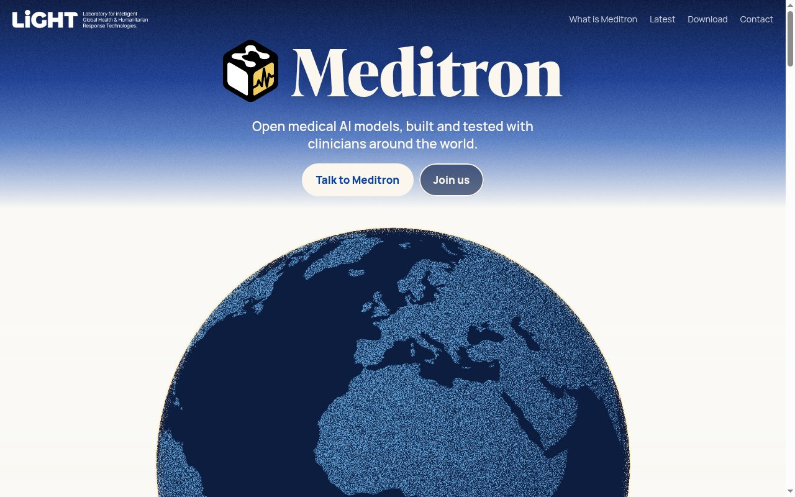
CurrentThe cube beside the name under a sky from blue to ivory, the globe rising out of it and playing by itself; three large thumbnails under it, one per commitment; the headlines in Ivy Presto.
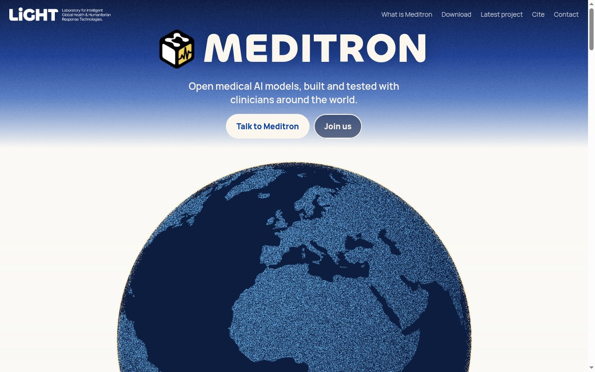
Current, logo fontThe current site with the name in capitals in Chillax, the font of the Meditron logo, instead of Ivy Presto.
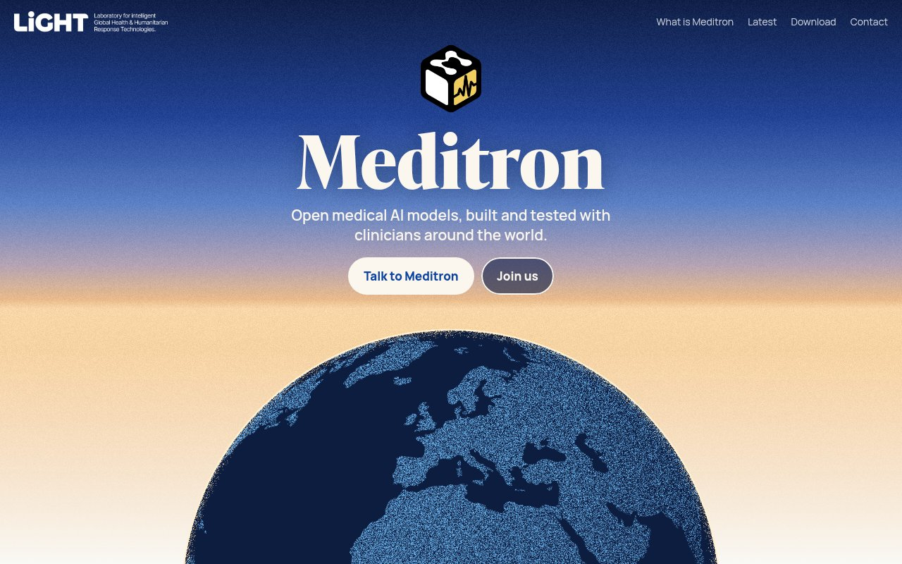
v7The cube above the name under a dawn sky, the globe rising out of it and telling the story of where clinicians evaluated Meditron.
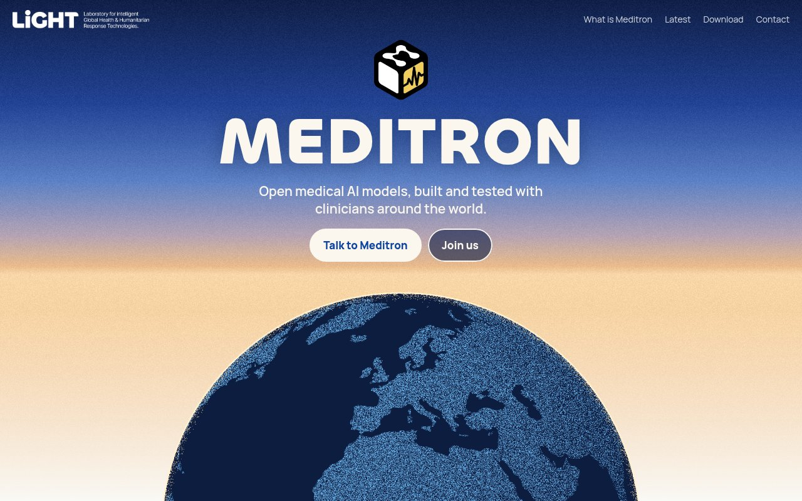
v7, logo fontVersion 7 with the name in capitals in Chillax, the font of the Meditron logo, instead of Ivy Presto.
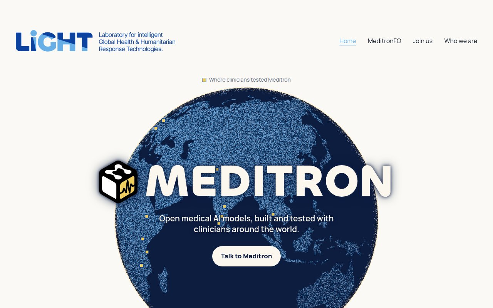
v6, logo fontVersion 6 with the name in capitals in Chillax, the font of the Meditron logo, instead of Manrope.
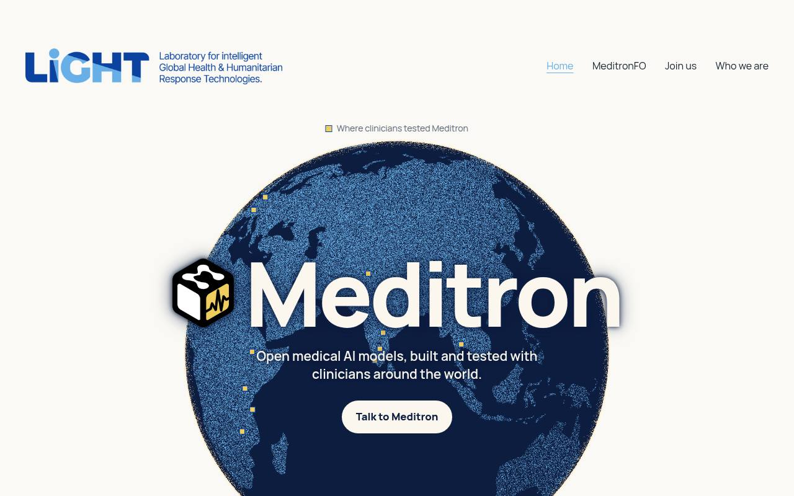
v6On the LiGHT template: the lab's header and footer, five folders under the three commitments, the chat under them.
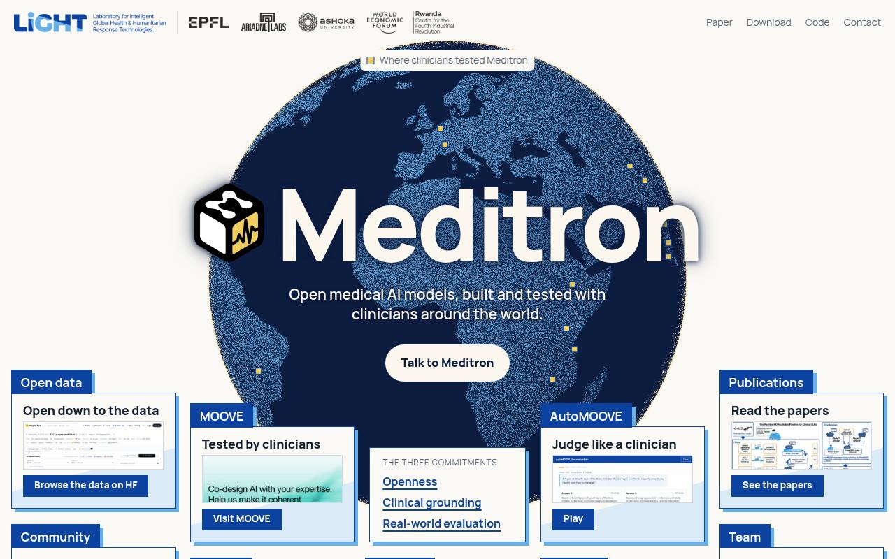
v5“What is Meditron” in plain language, with the 2023 to 2026 timeline; the last version before the LiGHT template.
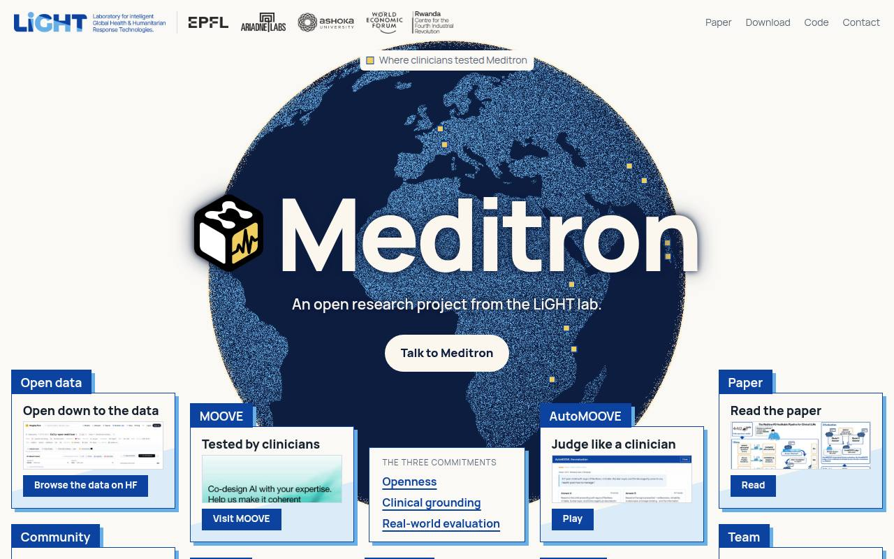
v4The navy dawn globe with the name in ivory, the 2026 MOOVE events on it, and large thumbnails for MeditronFO and the downloads.
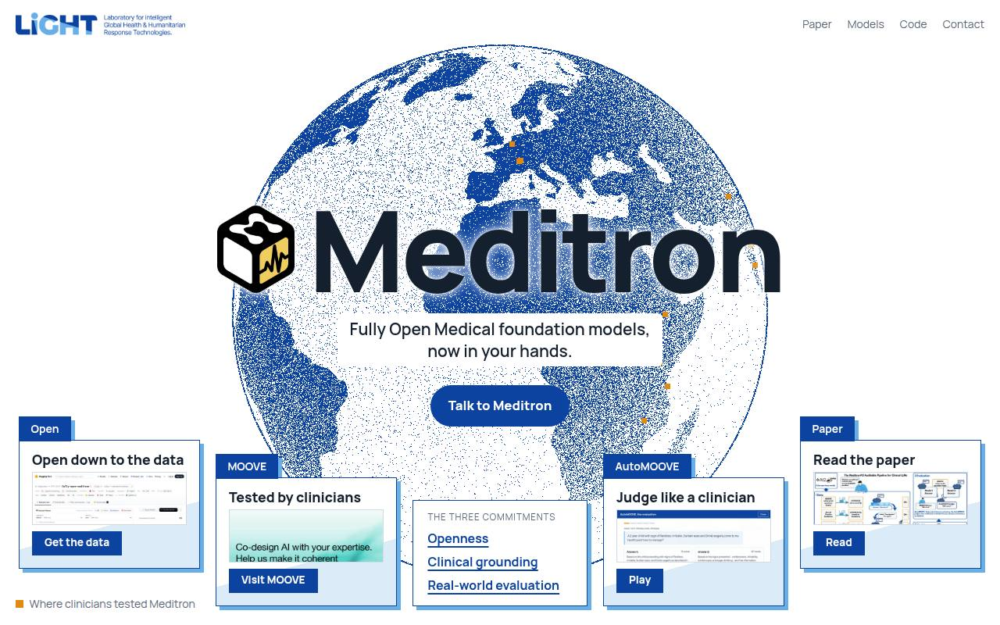
v3The folders as snapshots of where they lead, in a row along the foot of the globe, around the panel of three commitments.
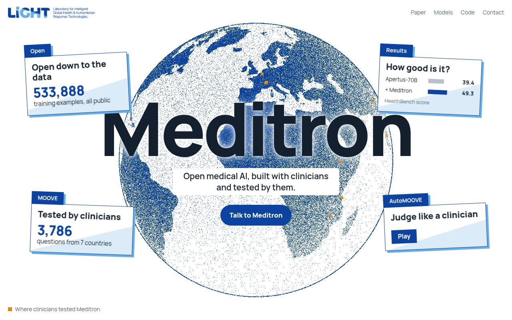
v2LiGHT's logo and blues, the folders cut to four, and a Cite section with a copyable BibTeX entry.
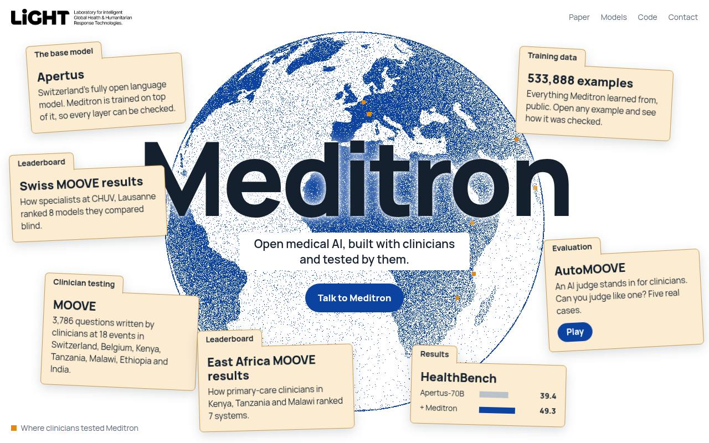
v1The first public site: the globe of MOOVE sites, the project folders, the AutoMOOVE game and the leaderboards.
Variants of the current site
- With the LiGHT beam: “Trustworthy medical AI = ƒ(…)” typing the three commitments above the globe.
- Titles at weight 400: every heading, card and panel title at regular weight.